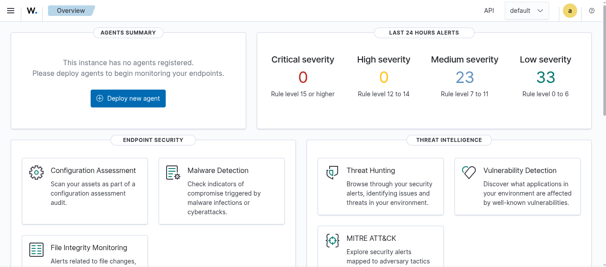
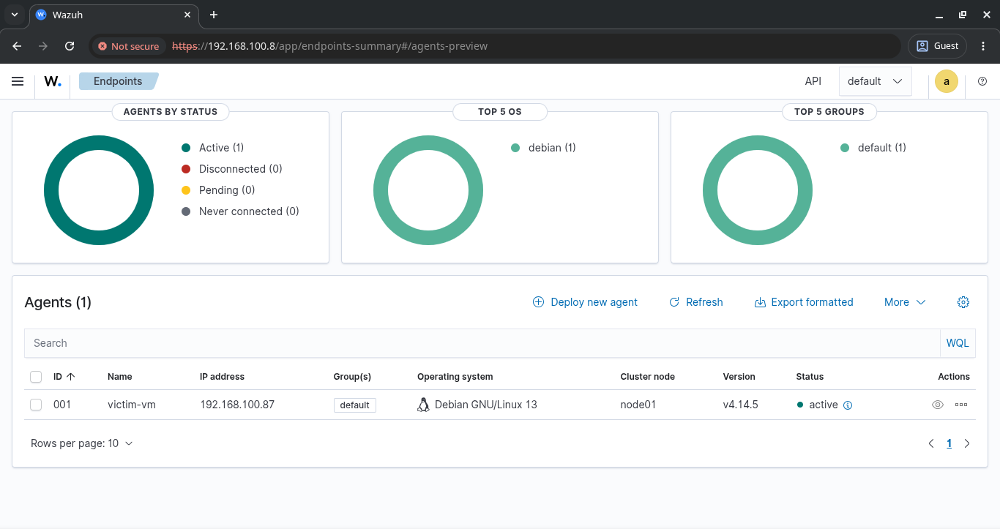

Wazuh was deployed using the official assisted installation method. The all-in-one installation script handles the deployment of all three core components automatically:
Installation command:
curl -sO https://packages.wazuh.com/4.14/wazuh-install.sh \ && sudo bash ./wazuh-install.sh -a
Upon successful installation, the script outputs administrator credentials required for dashboard access. These credentials must be saved immediately — they are not recoverable after this point.
The dashboard can be accessed via the host machine's local IP address or via localhost:
https://<host-ip>:443 — accessible from other machines on the network https://localhost — accessible from host machine only
The browser displays the following privacy warning:
"Your connection is not private — NET::ERR_CERT_AUTHORITY_INVALID"
This is expected behavior. Wazuh uses a self-signed TLS certificate
which is not recognized by the browser as it was not issued by a trusted Certificate
Authority. This is standard practice in lab environments. To proceed, select
Advanced → Proceed to localhost (unsafe).
Authentication was completed using the administrator credentials generated during installation.

A Wazuh agent was deployed on the target endpoint (Debian 13 VM) to enable log forwarding and real-time security monitoring. The agent was enrolled through the Wazuh dashboard by specifying the target OS, server address, and agent name. The generated installation command was executed on the endpoint:
wget https://packages.wazuh.com/4.x/apt/pool/main/w/wazuh-agent/wazuh-agent_4.14.5-1_amd64.deb \
&& sudo WAZUH_MANAGER='<wazuh-server-ip>' \
WAZUH_AGENT_NAME='Victom-vm' \
dpkg -i ./wazuh-agent_4.14.5-1_amd64.deb
Following installation, the agent service was enabled and started:
systemctl daemon-reload systemctl enable wazuh-agent systemctl start wazuh-agent
The agent successfully connected to the Wazuh server and appeared as
Active in the dashboard.
